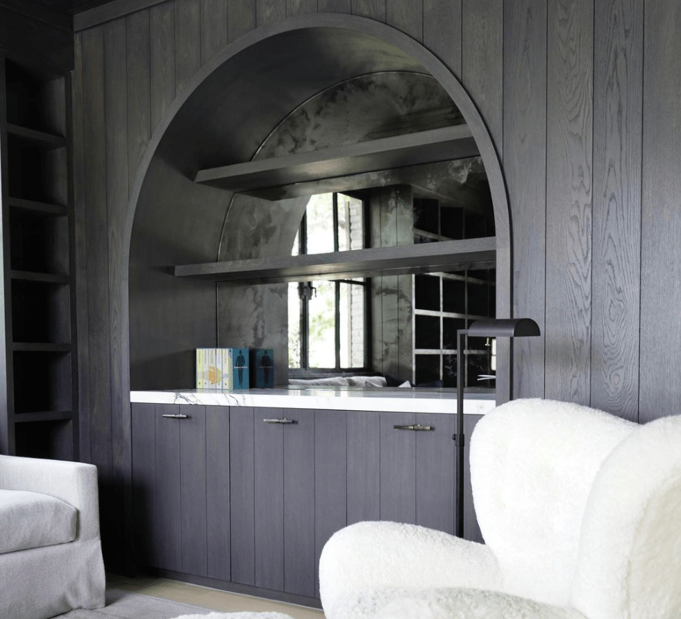

Storage that becomes
part of the home
Built-in cabinetry does something that freestanding furniture cannot — it integrates with the architecture of a room, making the space feel considered and complete rather than assembled. At H & J Cabinets, we have spent over 35 years designing and building custom built-ins for luxury homes across Orange County, from floor-to-ceiling libraries to fully custom walk-in wardrobes.
Every built-in begins with understanding how the space will be used and how it should look within the room. We work directly with architects and designers or independently with homeowners to develop solutions that are both highly functional and architecturally refined.

Integrated construction
that lasts the life of the home
A built-in cabinet is a permanent addition to a home. That means the standard it is built to should match the standard of the home itself. We use the same face-frame construction and premium materials for every built-in that we use for kitchen and bathroom cabinetry — because the longevity expectation is the same.

- Site-built and factory-built sections We build in sections for precision and transport, then assemble and scribe on site to fit exactly against walls, ceilings, and floors — no visible gaps, no filler strips.
- Full-height integration Cabinets run floor to ceiling where appropriate, with crown moulding and base details designed to match or complement the existing architecture of the room.
- Lighting integration We pre-wire for LED strip lighting, puck lights, and interior cabinet lighting — coordinated with your electrician before installation.
- Adjustable shelving systems Pin-hole shelf standards or fixed shelves depending on function — designed for long-term flexibility without sacrificing the appearance of a fixed, custom installation.
Built-ins that look like
they were always there
The mark of a truly well-executed built-in is that it looks as though the house was designed around it. Gaps, uneven reveals, crown moulding that doesn't land cleanly, shelves that bow under load — these are the failures of built-ins that were installed but not truly integrated. We do not leave a site until every scribe is clean, every reveal is consistent, and every door and drawer operates exactly as it should.
"Built-ins are the most permanent cabinetry decision a homeowner makes. We treat them with the permanence they deserve."
We also bring our experience working alongside top architects and designers to every built-in project. We understand how rooms are detailed, how mouldings need to transition, and how cabinetry needs to read within a space before a single piece is cut. That understanding is the difference between built-ins that look custom and built-ins that look like furniture that happens to touch the walls.